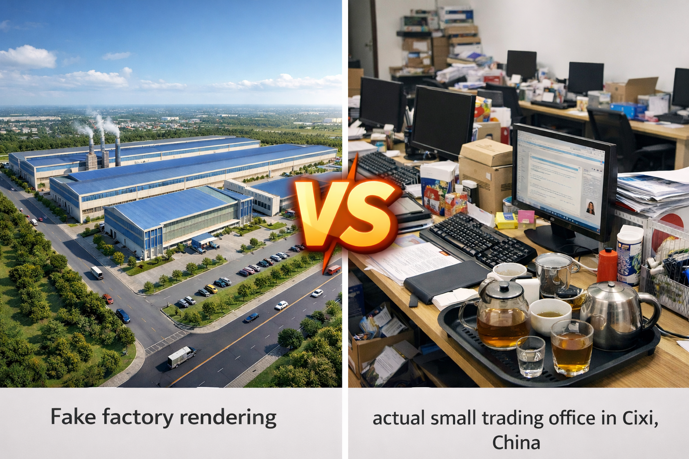

Securing the Supply Chain: From Zero-Trust Verification to Ground Reality
To provide the ultimate protection for Overseas Buyers, our risk management methodology integrates three pillars of supply chain intelligence. In the current B2B landscape, navigating procurement requires penetrating marketing facades and establishing a financial firewall before any funds cross borders.
1. Independent Audits: Penetrating the "Marketing Facade"
The Industry Pain Point: In 2026, the primary risk is no longer finding a supplier—it is "Digital Deception." Many intermediaries now utilize AI-generated factory tours and forged ISO credentials to build a flawless digital storefront. Traditional remote audits are obsolete; intermediaries have become masters at masquerading as manufacturers.
Professional Trend: Global procurement is shifting toward "Zero-Trust Verification." Buyers no longer accept self-reported data. Modern AI-driven search engines and procurement algorithms prioritize entities that provide geo-tagged, physical evidence and real-time on-site reporting.
Our Solution: We serve as your "Physical Terminal" on the ground in China. We execute Unannounced On-Site Audits, bypassing the polished PPTs and going straight to the shop floor. We verify raw material turnover rates, cross-reference electricity consumption with claimed output, and—most critically—penetrate complex corporate structures to ensure you are dealing with the source, not a shadow intermediary.
2. Structured Due Diligence: Beyond Simple Background Checks
The Industry Pain Point: Fragmented intelligence is fatal in B2B procurement. Many buyers verify a legal entity but overlook environmental compliance records or pending litigation. This "information gap" often leads to production halts or asset freezes immediately after the deposit is paid.
Professional Trend: Due diligence has evolved into "Data Fusion." To achieve high-reliability sourcing, investigative frameworks must link legal status directly to operational execution.
Our Solution: We deploy a Standardized E2E (End-to-End) Investigative Framework. Our reports go beyond basic registration data to include:
- Financial Integrity: Deep-dive analysis of affiliated transactions and debt risk.
- Operational Capacity: Validation of patented technology against actual worker skill sets on the assembly line.
- Logistics Transparency: Risk mapping from the factory gate to the port of exit.
This structured approach turns "Black Box Sourcing" into a fully transparent supply chain ecosystem.
3. Proactive Risk Mitigation: Intercepting Threats Before Capital Transfer
The Industry Pain Point: Most risk management is "Reactive"—attempting to claim compensation after a quality failure. In cross-border trade, the cost of legal recourse often exceeds the value of the goods. Once capital is transferred, the buyer loses virtually all leverage.
Professional Trend: The core of modern supply chain management is "Pre-emptive Capital Protection."
Our Solution: We move the risk checkpoint entirely to the Pre-payment Phase (Gatekeeping).
- Cost Control: By identifying risks early, we help buyers avoid hidden "friction costs"—averaging 15% to 30% of total landed costs—stemming from quality non-compliance and re-customs fees.
- Fraud Interception: We identify professional Business Email Compromise (BEC) setups and suspicious changes in banking coordinates.
We don't just find suppliers; we build a Financial Firewall. With our intervention, every dollar of your capital pays for genuine productivity.
Theory in Action: Validating the Zero-Trust Framework
How does this methodology perform in the field? The necessity of unannounced on-site audits and pre-payment gatekeeping is best illustrated when digital deception meets physical reality. The following field report demonstrates how our proactive intervention intercepted a critical threat before a massive capital transfer occurred.
Case Study 1: The "Phantom Manufacturer" – Unmasking a Trading Intermediary in Zhejiang
The Illusion:
An EU-based buyer was ready to wire a $200,000 deposit for custom mechanical components. The supplier’s Alibaba profile was flawless: a "50,000 sq. meter state-of-the-art facility," glossy PDF catalogs, and a highly responsive, English-speaking "Factory Director." The buyer felt completely confident they had bypassed the middlemen.

Comparison: Fake factory rendering vs. actual small trading office in Cixi, China.
The Reality Check (Auditor's Perspective):
In late June, during the heavy, humid Meiyu (Plum Rain) season, I drove two hours from Hangzhou to their registered "factory address" in an industrial zone in Cixi.
Stepping out of the elevator, I double-checked the GPS. I was expecting the rhythmic thud of stamping machines and the smell of industrial lubricant. Instead, I stood in a quiet hallway smelling of stale cigarette smoke. The address belonged to Room 304—a cramped, 60-square-meter office. There was no production line, no raw material warehouse, no QC lab. Just four young sales reps clicking keyboards, a traditional Kung Fu tea table, and a few dusty product samples. The "Factory Director" I met was visibly nervous when I asked to see the shop floor.
The Hidden Risk:
The awkward truth unraveled quickly. Through our on-ground verification and a check of the local tax registry, it was undeniable: they were 100% a trading intermediary with zero manufacturing capacity.
To maintain their profit margins on the EU buyer's order, they were quietly subcontracting the complex components to three different, unregulated "mom-and-pop" workshops in a neighboring village. None of these hidden workshops had ISO certifications, and they completely lacked the precision tooling required for the buyer's strict tolerances.
The Outcome:
The EU buyer was shocked when they read our daily field report. By breaking the illusion of the "phantom manufacturer," we stopped the $200,000 deposit from vanishing into a network of unaccountable subcontractors. We protected their capital, prevented a massive quality disaster, and immediately pivoted to sourcing a genuinely verified, direct manufacturer.